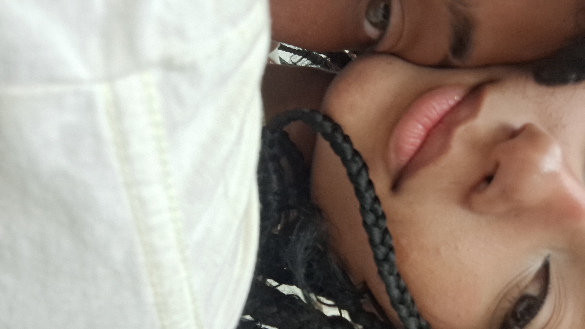

13/10/24 Minha linda mesmo sem te conhecer, já sinto tua energia, Como se o brilho dos teus olhos já me fosse familiar, Tem algo em ti que carrega uma vibe intensa, Uma força que me puxa, sem eu nem te olhar. Te imagino com a elegância de uma rainha, Tipo Cleópatra, sem precisar dizer nada, Tens esse jeito de despertar desejo e mistério, Mesmo de longe, já me deixas intrigado. Ainda nem vi teus gestos, mas já os sinto, Imagino que seriam suaves, mas cheios de intenção, E o toque que ainda não provei já me chama, Como se só a ideia de ti já acelerasse meu coração. Sem nunca te ver, já me sinto atraído, Como se o destino já soubesse onde isso ia dar, Porque, assim como Cleópatra, conquistas sem aparecer, E já tens meu interesse, sem nem precisar tentar.
Minha garotinha Te amar é o melhor sentimento que existe, se bem quando estou ao seu lado sinto os sentimentos mais inexplicáveis que existem, mas tão bom. Antes eu não entendia o que era o "amor" mais depois da sua chegada tudo ficou mais claro,e passei a entender mais sobre esse sentimento incrível e tão maravilhoso "Amar alguém é você estar ao lado da pessoa, amá-la mesmo em suas tempestades, ajudá-la a curar feridas passadas e fazê-la feliz ao máximo,Amar alguém é você deixar algumas de suas necessidades de lado, para fazer a vontade dessa pessoa para vê-la feliz, Amar alguém é você estar com ela quando ela mais precisar, quando ela acordar e ○ cabelo estiver todo bagunçado, mais você ainda irá vê-la como ela realmente fica linda até mesmo depois de acordar. Amar alguém é de fato o sentimento mais puro e verdadeiro que existe, você se sente tão bem com a pessoa, que não importa nada no mundo porque estando com ela, você se sente feliz e completo." Eu quero te amar em todos os seus momentos, eu não vou te abandonar em seus momentos de tempestades, irei dançar com você até todos os problemas se resolverem, estarei ao seu lado te apoiando, e dando todo o amor que você merece.Eu vou te amar mesmo quando você tiver com a roupa mais petecada, amarei você mesmo quando você estiver chorando e em seus momentos mais difícil, estarei ao seu lado sempre meu amor. Algumas pessoas ficam com ouras por prazer, e acaba esquecendo o que realmente importa, que é a companhia da pessoa, o amor Com você eu quero fazer tudo diferente, sei que vamos ter nossos momentos íntimos, mais eu quero te amar até não houver amanhã, eu quero proporcionar o melhor da vida e levar você a lugares únicos que você nunca foi, quero ouvir todas as músicas de amor que fala sobre você e a gente, eu quero passar cada momento ao seu lado, não precisa ser algo grande, nem com muitas coisas caras, o que baste e termos um ao outro, nossa companhia de fato é a melhor coisa que existe equero ficar com você mesmo quando tudo desmoronar, quero ser O seU porto seguro assim como você é o meu.As coisas ficaram muito mais melhores depois que você chegou, antes tudo que era sem cor, agora tem cor e é muito mais bonito,você alegra qualquer lugar com a sua energia incrível e calma,você é sem dúvidas a melhor pessoa desse mundo, tenho sorte de você poder fazer parte da minha vida, saiba que estarei ao seu lado e farei por você o que ninguém nunca fez, vamos passar por todos os obstáculos e venceremos todas as barreiras que existem, eu não vou desistir de você e nem da gente, lutarei cada vez mais por você e pelo nosso relacionamento Você me faz tão feliz mulher, ter você ao meu lado é sem dúvidas a melhor coisa do mundo, "Como é bom ter um amor que cuide e ame você do jeito que realmente merece" você é a luz da minha vida, meu império romano, todas as suas curvas são como uma grande obra de arte, marcando cada traço e recapturado cada movimento do seu corpo, você é fabulosa meu amor, eU SOU completamente apaixonado por você e falo isso para que todos saibam. Ainda seremos muito felizes meu amor, segure a minha mão que irei segurar a sua, e vamos passar por cada momento juntos, conte comigo pra tudo meu amor, eu te amo muito minha princesa.Eu sempre vou estar aqui por vc, nao vou desistir do nosso amor,mo momentos eu sei quw vc nao tem cabeça pra isso e ,so espero que vc lembre que vc sempre vai ter eu aqui pra ser sua base pra recorrer quando vc nao estiver aguentando quanso so quiser chorar ou quiser alguem pra desabafar eu sempre vou estar aqui, sempre ,eu te amo e vc e tudo pra mim pode conta comigo pra tudo minha prin prin